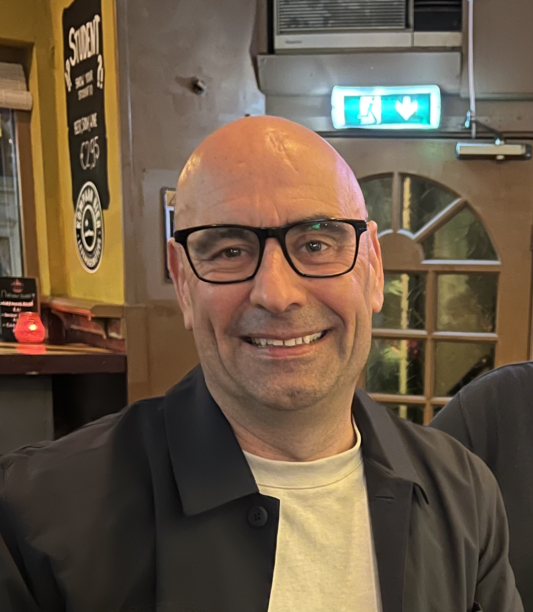

Yes I know it's early days but technically I am a developer already, as taught by the
wonderful Angela Yu.
This is my resume, initially built with html only so a little dated to start with.

Summary
(This first paragraph of 3rd person waffle is from my latest CV, not convinced humans ever read it)
Experienced Senior IT Service Manager and Consultant with a passion for customer success who has a proven history of exceeding service contractual obligations for clients and driving service management improvements. He has worked for a diverse range of clients (outsourcing, consultancy, and direct) across various sectors including financial services, public utilities, telecoms, mobile, and media.
Education
University degree, post graduate Diploma, professional qualifications
Work experience
Engaged by numerous clients in consultancy and operational management roles, utilising my service management expertise or related technology experience